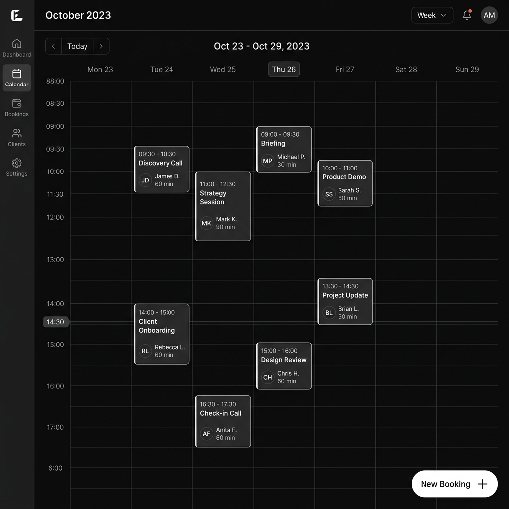

AgendaLink
Aplicação cirúrgica e moderna que cobre o ciclo completo do usuário, do cadastro ao pagamento. Algoritmos de fuso horário, gestão de conflitos e integração financeira real via Stripe.
Contexto & Problema
Profissionais autônomos gastam horas semanais organizando horários, lidando com no-shows e realizando cobranças manuais. Plataformas genéricas falham na flexibilidade de pagamentos locais ou carecem de regras de negócio personalizadas para o prestador de serviço brasileiro.
Arquitetura & Stack
- Frontend: React 19, Vite, Tailwind v4. Componentes visuais de calendário de alta performance.
- Banco de Dados: PostgreSQL via Supabase. Transacionalidade ACID e constraints rigorosas para evitar double-booking.
- Pagamentos: Edge Functions Serverless acopladas a Webhooks do Stripe — pagamentos externos de maneira extremamente segura.
- Segurança: Row Level Security (RLS) diretamente no banco, eliminando vulnerabilidades na camada de aplicação.
Decisões Técnicas
O maior risco em um sistema de reservas é a concorrência (race conditions). Se dois clientes tentarem reservar o mesmo horário simultaneamente, o sistema não pode permitir ambas as gravações. Implementei travas a nível de banco (Table Constraints no PostgreSQL) e validações no servidor antes de instanciar a Intent de Pagamento, garantindo integridade 100%.
Os algoritmos de fuso horário garantem que profissionais em diferentes regiões visualizem e gerenciem seus horários corretamente, sem conflitos de timezone.


Resultado
Recrutadores adoram ver integrações com dinheiro real. O AgendaLink prova que SaaS focado no transacional não tolera estado global instável. O projeto consolida princípios de engenharia de software transacional com a comodidade visual das tecnologias modernas de frontend.